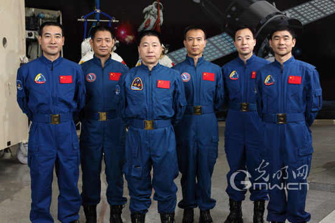

Astronaut
 Astronauts, or astronauts, full name space aerospace A member is a person who has been flying in space or has been flying in space. The criteria for determining space flight are not completely uniform. In the United States, people who travel more than 80 kilometers (50 miles) above sea level are called astronauts. The space flight defined by the International Air Transport Association (FAI) needs to exceed 100 kilometers. As of April 18, 2004, a total of 440 people were defined in the United States, and a total of 27,082 crew days (crew-day, defined by the United States) were spent in space, sharing 98 crew days in space. . Under the definition of the International Air Transport Association, only 434 people are eligible. Astronauts entering space come from at least 32 countries. In Hong Kong and Southeast Asia, astronauts are also known as astronauts. As of 2013, only the former Soviet Union/Russia, the United States, and China have the ability to launch manned space missions. Astronauts from other countries need to cooperate with the above three countries to complete the manned space mission. Since the first flight of mankind in 1961, a total of astronauts from 38 countries have flew.
1Word Interpretation
Conventional astronauts employed by the Russian Aeronautics and Space Administration [1] or astronauts of the former Soviet Union are known as "космонавт", whose English version is Cosmonaut. "космонавт" comes from the Greek words "kosmos" (for "full universe") and "nautes" (for "crew"). In fact, "cosmonaut" and "astronaut" have the same meaning, and the principle of choosing the words used is often a political factor. On March 14, 1995, astronaut Norman Sagad became the first American to take a Russian-launched spacecraft into space. He could be considered the first American "cosmonaut" in the process.
Allegedly, Chiew Lee Yih of Malaysia created the English word "Taikonaut" (Astros) in March 1998 and first used it in a network technology forum. At about the same time, Chen Lan (Chen Lan) used it in his "Go Taikonaut" web page. This term is commonly used by Western media to refer to Chinese astronauts. "Taikonaut" consists of the Chinese abbreviation "taikōng" of "space" and the English abbreviation "naut" of "the crew" (or the Greek "naus" of the "voyager" and the abridged "Astronaut" of the "astronaut". Most of the manuscripts published by the Chinese government insist on using the more technical term "astronaut", meaning "space voyager."
2Space Milestones
The world's first astronaut was Yuri Gagarin of the Soviet Union. He took the East 1 (Vostok 1) into space in April 1961. The first female astronaut was Valentina Treskova, who entered space in June 1963 on the Vostok 6. In May 1961, Alan Shepard became the first astronaut in the United States. On October 15, 2003, Yang Liwei became the first astronaut in China on the Shenzhou V. Other Chinese people who have ever entered space include Lu Jie, Wang Junjun, Jiao Lizhong, and Zhang Fulin, all from the United States.
The youngest of the astronauts in space is Gorman Titov, who was only 26 when he was on the East 2nd. The oldest is John Glenn, who was 77 when he took the STS-95 into space. The longest record in space is the 438 days of Warri Lee Pauliekov. By 2003, the maximum number of individuals in space was seven, and the record was maintained by Jerry L. Ross and Franklin Zhang-Dias. The distance that the astronauts are farthest from the Earth is 401,056 kilometers (produced during the Apollo 13 emergency).
The first astronaut on the spacecraft's spacecraft was Mike Melville, on the SpaceShipOne Flight 15P. This should be contrasted with a wide variety of millionaire space travellers who are only publicly funded flight passengers or a small number of people (usually provided by Russia to fly to the ionosphere (ISS)).
In the United States, candidates selected as astronauts will receive the wings of a silver astronaut. When they enter space, they will receive the wings of the gold astronauts. The US Air Force also awarded astronauts' wings to pilots flying over 80 kilometers above sea level.
3training
Select
Aerospace activities are a special kind of professional activity, which has the characteristics of special working environment, highly complex professional skills and arduous flight tasks. Such a profession requires astronauts not only to have a healthy physique, good quality of heart, but also to have a high tolerance and resistance to the aerospace environment, but also to have profound knowledge and superb skills. Therefore, the astronauts of the world have carefully selected the astronauts.
The specific content of the astronaut selection is determined according to the spacecraft equipment and space missions, and is generally divided into four aspects.
1, basic conditions
The same as the pilot selection, but the level of education and work ability is higher.
2, medical selection
In addition to the medical selection criteria of the pilots, there has been a history of dysfunction of the recessive neuro-endocrine system. The cardiovascular system, vestibular function, and visual system must be thoroughly and carefully examined during the physical examination.
3, psychological selection
The selection of the quality of the heart is an important aspect of the selection of astronauts. It is necessary to ascertain the personality, emotional stability, mental state, adaptability and coordination of working with others.
4. Aerospace special environment endurance selection
In the early days of manned space flight, people attached great importance to the selection of special environmental endurance. However, with the continuous development of space technology and the gradual improvement of the environment inside the manned spacecraft, some special environmental factors such as noise, vibration and temperature have not been tested. As the main content of the selection. The special environmental endurance selection mainly carries out the test of weightlessness adaptability and re-adaptability after return, such as vestibular function examination, overweight endurance examination, and low-pressure hypoxia endurance examination.
After these items have been inspected, the medical staff will evaluate the results of the inspection on a single item and a comprehensive project, and make a general evaluation.
purpose
The purpose of basic training is to first enable astronaut candidates to master and complete the scientific knowledge and skills necessary for manned spaceflight, and secondly to further improve their physical fitness and improve their psychological quality. The physical and psychological training that astronauts must accept: for example, a centrifuge with a gravity of 10 times the Earth's gravity and a long-term training in a soundproof room, the hardship is unimaginable. First of all, to have an undergraduate study experience, you need to accept knowledge in the fields of science, medicine, engineering, etc. Second, you must have operational experience, especially as a test pilot; third, excellent astronauts are also good at helping others. "
Isolation room training
After entering the space, the spacecraft is far away from a large crowd. Apart from being connected to the ground, it is isolated from the world. Long-term lonely life has a certain impact on people's psychology and physiology. In order to allow astronauts to adapt to this particular life, isolation room training came into being. The isolation room is almost immune to any sound, just as it is isolated from the outside world. Does the character fit in? Is it a factor to consider when selecting a crew? Aerospace psychologists say, no, many people will be surprised to hear, because after all, astronauts have to work together in a small space, the same one you suffer It’s not a happy thing to have people together, and even work will be affected. However, astronauts are highly professional people who do not let their personal feelings affect the execution of the task. Besides, a space time is relatively short, usually one week, and at most two weeks. For most astronauts, even in such a short period of time, even sleeping with the devil is not a problem. However, if you go to the space station or go to Mars, it will be a matter of months or even years, which is completely another matter. People who can't get along with each other will inevitably have conflicts and conflicts, which will affect everyone's cooperative relationship. Therefore, the requirements for the psychological quality of astronauts are very important.
Understanding
Chinese training reveals
The days of the manned spacecraft coming off in October this autumn are not much. What are the astronauts training at this stage? Professor Chen Hui revealed that there are still basic training for astronauts, and familiar with the spacecraft cabin facilities. Their main training content. At the end of last year, Professor Chen Hui visited the space city. He told reporters about the variety of training contents of astronauts.
Selection criteria
Want to become an astronaut, the selection criteria, in addition to the flight time of more than 1000 hours, and the basic physical fitness, must also pass the "technical test" of the special facilities of the space city, including: the swivel chair with a speed of 24 laps per minute to check the pair The ability to withstand vibration and vertigo; an electric swing with a front-to-back motion of 15 meters to test the space motion sickness that the human body may cause when the spacecraft enters orbit.
Extreme vertigo
"Swivel chair + swing"
Entering the space city, the first thing that comes into view is a small house, which is closed on all sides. In addition to a control instrument against the wall, a swivel chair in the center of the ground is particularly eye-catching. This swivel chair can not only do 180 degree clockwise and counterclockwise fast running, but also can swing up and down at the same time. The swivel chair is mainly used to check the vestibular nerve function of the aerospace candidate to understand his tolerance to vibration and vertigo.
From the swivel chair room, the electric swing room was entered. Under the guard of a steel frame of up to several tens of meters, a car-like swing was lifted by four steel arms. When the electric swing swings, it can be pulled out 15 meters before and after. It is mainly used to adapt to space sports and carry out research on space motion sickness.
Experience "Bungee Jump"
The Space City also has an "impact tower room" with a green tower about 4 stories high. Its role is to simulate the impact environment of the spacecraft returning to the Earth, thereby strengthening people's impact resistance and studying various ways of protection.
It is more difficult to play the "flying saucer". The three-story centrifuge room is equipped with the largest domestic manned centrifuge in Asia.
The human centrifuge is a huge rotating device that can be stretched up and down or left and right. On the top is a 16-meter rotating arm that holds an elliptical stainless steel enclosed pod in front of the arm with a sturdy steel frame. The pod can also be rotated at an angle, so Establish overweight conditions that act on astronauts in the same direction. When the whole centrifuge is turned on, some of the "flying saucers" in the playground, whether it is "house", "arm" or the pod, are constantly intensifying the swinging, but the speed of the rotation and the angle of the swing are "UFO" can't be compared anyway.
Become small and lonely
Astronauts' safety and health research is a key focus of space technology development. There are a variety of simulation cabins in the Astronaut Training Center that are designed to adapt astronauts to space life.
The low pressure compartment is a pale green T-shaped cabin with three parts: work compartment, rest compartment and sanitary compartment. When the astronauts put on a special space suit and walked into the low-pressure compartment, the air in the cabin was taken out, and the astronauts began to enter "space" at this time. In the small cabin, there is neither a TV nor an audio system. Even some fitness activities with a large swing range are restricted. There is no telephone, no communication, and complete isolation from society. Learning how to adapt to this environment is a topic that must be overcome before going into space.
Knowing the way home
The planetarium is the last level in the astronaut simulation training. Before the astronauts can take off the mission, they must be familiar with the starry sky map and find out the route they will travel. Once the manned spacecraft's automatic navigation system fails. The astronauts can control themselves.